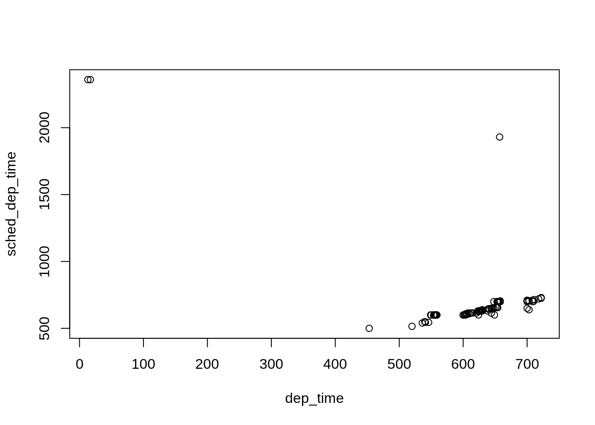

2.12 December flights
Summary statistics for December

## year month day dep_time sched_dep_time
## Min. :2013 Min. :12 Min. : 1.00 Min. : 1 Min. : 500
## 1st Qu.:2013 1st Qu.:12 1st Qu.: 8.00 1st Qu.: 913 1st Qu.: 905
## Median :2013 Median :12 Median :16.00 Median :1406 Median :1355
## Mean :2013 Mean :12 Mean :15.72 Mean :1357 Mean :1345
## 3rd Qu.:2013 3rd Qu.:12 3rd Qu.:23.00 3rd Qu.:1750 3rd Qu.:1729
## Max. :2013 Max. :12 Max. :31.00 Max. :2400 Max. :2359
## NA's :6150
## dep_delay arr_time sched_arr_time arr_delay
## Min. :-43.00 Min. : 1 Min. : 3 Min. :-68.00
## 1st Qu.: -4.00 1st Qu.:1114 1st Qu.:1133 1st Qu.:-11.00
## Median : 0.00 Median :1544 Median :1605 Median : 2.00
## Mean : 16.58 Mean :1505 Mean :1543 Mean : 14.87
## 3rd Qu.: 19.00 3rd Qu.:1948 3rd Qu.:1951 3rd Qu.: 25.00
## Max. :896.00 Max. :2400 Max. :2359 Max. :878.00
## NA's :6150 NA's :6354 NA's :6690
## carrier flight tailnum origin
## Length:168810 Min. : 1 Length:168810 Length:168810
## Class :character 1st Qu.: 512 Class :character Class :character
## Mode :character Median :1503 Mode :character Mode :character
## Mean :1927
## 3rd Qu.:2963
## Max. :6181
##
## dest air_time distance hour
## Length:168810 Min. : 21.0 Min. : 94 Min. : 5.00
## Class :character 1st Qu.: 93.0 1st Qu.: 533 1st Qu.: 9.00
## Mode :character Median :142.0 Median : 944 Median :13.00
## Mean :162.6 Mean :1065 Mean :13.19
## 3rd Qu.:202.0 3rd Qu.:1400 3rd Qu.:17.00
## Max. :661.0 Max. :4983 Max. :23.00
## NA's :6690
## minute time_hour
## Min. : 0.00 Min. :2013-12-01 05:00:00
## 1st Qu.: 9.00 1st Qu.:2013-12-08 15:00:00
## Median :29.00 Median :2013-12-16 09:00:00
## Mean :26.27 Mean :2013-12-16 06:34:27
## 3rd Qu.:45.00 3rd Qu.:2013-12-23 18:00:00
## Max. :59.00 Max. :2013-12-31 23:00:00
##